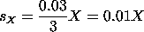
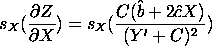

|
2.
Measurement Process Characterization
2.6. Case studies 2.6.5. Uncertainty analysis for extinguishing fire
|
|||
| Flux Uncertainty |
The uncertainty of the nitgroen volume fraction due to
flux is calculated. The measured flux is considered to
have an expanded uncertainty of at most ± 3%. If we
assume that 3% represents the outer limits of a normal
distribution, this corresponds to a standard deviation for
flux of
 |
||
| Nitrogen Volume Fraction Uncertainty Due to Flux |
The uncertainty in nitrogen volume fraction due to the
uncertainty in the flux measurement is calculated by
propagation of error
to be:
 |
||